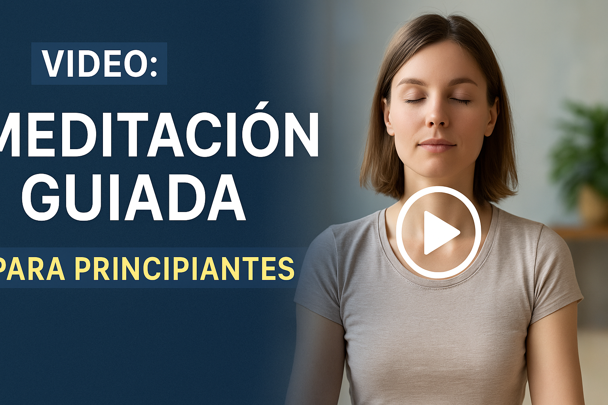

Video: Meditación Guiada para Principiantes – Guía Completa para Empezar sin Miedo
Introducción: ¿Qué es una Meditación Guiada?
Hoy en día, millones de personas encuentran en la Meditación Guiada una herramienta sencilla para calmar la mente y cultivar la atención plena. Un Video: Meditación Guiada para Principiantes es la forma más práctica de iniciarse: solo escucha y déjate guiar.
Este tipo de meditación combina la voz de un instructor y música suave para ayudarte a relajar el cuerpo y dirigir la mente hacia la calma y la observación.
Beneficios de la Meditación Guiada para Principiantes
Reduce el estrés y la ansiedad
Seguir una voz paso a paso elimina la presión de “hacerlo bien”. Te permite relajar tensiones y calmar pensamientos repetitivos.
Facilita la concentración
Los principiantes suelen perder el foco rápido. Un Video: Meditación Guiada para Principiantes actúa como ancla para volver al presente.
Ayuda a crear hábito de meditar
Escuchar una meditación guiada cada día ayuda a formar una rutina. Con el tiempo, tu mente pedirá esos minutos de calma diaria.
Cómo funciona una Meditación Guiada en Video
Elementos clave de una sesión guiada
La guía empieza invitándote a relajarte, adoptar una postura cómoda y enfocar la respiración. Después, conduce a visualizar o repetir frases positivas.
El papel de la voz y la música
La voz y la música crean un ambiente seguro. Muchos videos usan sonidos de naturaleza o instrumentos suaves para reforzar la calma.
Ventajas de usar Videos de Meditación Guiada
Flexibilidad y comodidad en casa
Puedes elegir la duración, pausarlo, repetirlo o probar estilos diferentes. No dependes de horarios ni lugares.
Adaptación a diferentes necesidades
Hay videos cortos para relajarte en la oficina, sesiones largas para dormir mejor o guías para gestionar emociones difíciles.
Consejos para elegir un buen Video de Meditación Guiada para Principiantes
Duración recomendada para principiantes
Empieza con videos de 5 a 10 minutos. Con la práctica, aumenta a 20 o 30 minutos.
Tipos de guías: voz masculina o femenina
Escoge la voz que más te relaje. Algunas personas prefieren voces masculinas, otras femeninas.
Entornos y ambientación
Un buen video debe tener música suave, imágenes relajantes y sin interrupciones publicitarias molestas.
Cómo prepararte para tu primera sesión de Meditación Guiada
Espacio y postura adecuada
Busca un lugar tranquilo, siéntate o recuéstate con la espalda recta. Silencia notificaciones para evitar distracciones.
Uso de auriculares y dispositivos
Usa auriculares para sumergirte mejor en la guía y aislar ruidos externos.
Momento ideal del día
Elige un momento tranquilo: al despertar o antes de dormir son ideales para muchos.
Práctica recomendada: Video de Meditación Guiada para Principiantes
Para empezar, aquí tienes un ejemplo: 🎥 Video en YouTube – Meditación Guiada 10 minutos para Principiantes
Errores comunes al seguir meditaciones guiadas
- Esperar no distraerse nunca.
- Juzgarse si la mente divaga.
- Pensar que más tiempo siempre es mejor: la constancia importa más.
Apps y canales recomendados de Meditación Guiada
- Headspace
- Calm
- Insight Timer
- Canal de YouTube: Meditación para Todos
Preguntas frecuentes sobre Video: Meditación Guiada para Principiantes
1️⃣ ¿Necesito experiencia previa? No, está diseñado para principiantes.
2️⃣ ¿Cuántos minutos debo meditar? Empieza con 5-10 minutos al día y aumenta gradualmente.
3️⃣ ¿Qué pasa si me duermo? No pasa nada, la relajación es parte del proceso.
4️⃣ ¿Cuándo es mejor usar un video? Cuando tengas tiempo y calma: mañana, tarde o noche.
5️⃣ ¿Qué hago si no me concentro? La práctica constante mejora la concentración, no te juzgues.
6️⃣ ¿Dónde encuentro buenos videos? En YouTube, apps o recursos como Mindful.org.
Conclusión: Empieza hoy tu práctica guiada sin complicaciones
Un Video: Meditación Guiada para Principiantes es el mejor inicio para calmar tu mente, mejorar tu enfoque y vivir más presente. Ponte cómodo, respira y dale play. Tu viaje de bienestar empieza hoy.
